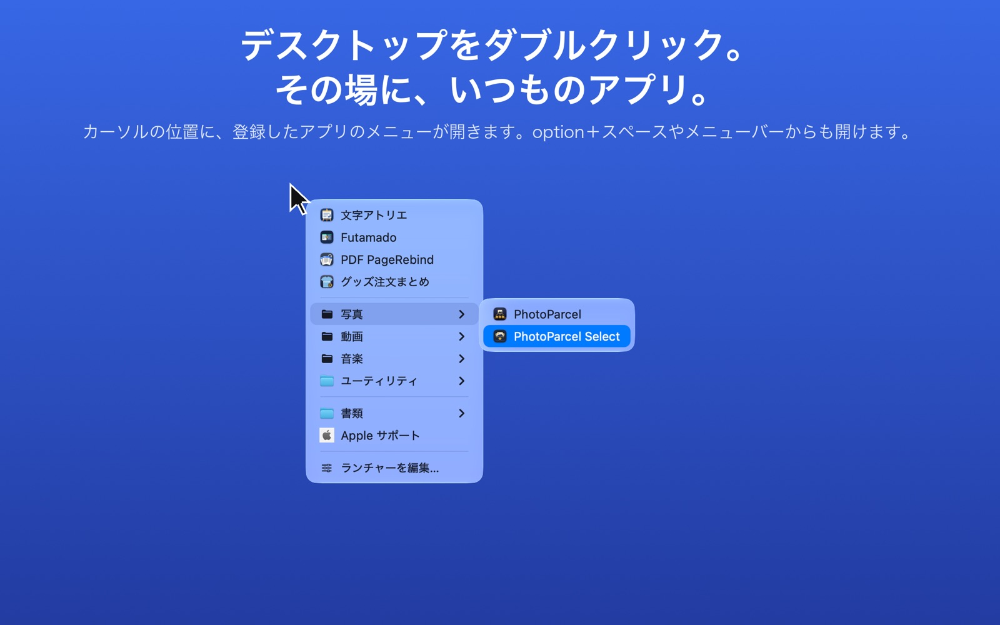
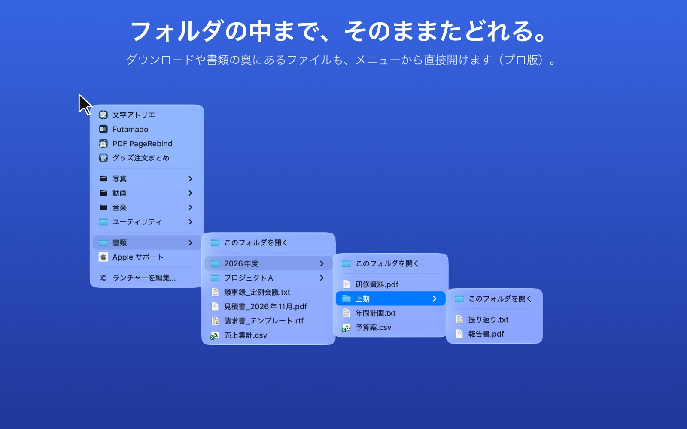
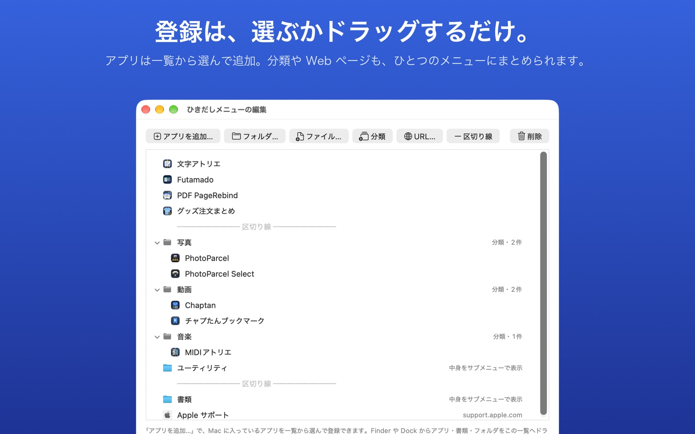

ひきだしメニュー
デスクトップをダブルクリック。その場に、いつものアプリ。
マウスのカーソルの位置に、よく使うアプリ・書類・フォルダのメニューが開く Mac 用のランチャーです。Dock やアプリの一覧を探しに行かなくても、手元でそのまま起動できます。
- Mac
- 基本の機能は無料
- プロ版は買い切り
- データの収集なし

手元で開いて、手元で起動
よく使うものを、ひとつのメニューにしまっておく。必要なときに、カーソルのある場所で引き出す。そんな使い方のためのアプリです。
カーソルの位置に開く
デスクトップの何もない所をダブルクリックすると、その場所にメニューが開きます。画面の端まで手を動かさずに済みます。
開き方は3通り
デスクトップでダブルクリック（ホイールボタンの押し込みにも切り替え可）、キーボードの option＋スペース（ほかの組み合わせも選べます）、メニューバーのアイコン。
登録は選ぶだけ
「アプリを追加…」で、Mac に入っているアプリを一覧から選ぶだけ。フォルダに入ったアプリも出ます。Finder からアプリや書類をドラッグしても登録できます。
分類で整理
分類（サブメニュー）と区切り線で整理でき、並べ替えもドラッグで。名前はダブルクリックで好きなものに変えられます。
フォルダの奥までたどれるプロ版
ダウンロードや書類などのフォルダを登録すると、中のファイルや子フォルダをメニューで順にたどって、そのまま開けます。
Web ページもまとめてプロ版
よく見るページをメニューに登録できます。サイトのアイコンも表示されます。
画面
横にすべらせると、ほかの画面も見られます。


はじめに
最初は何も登録されていない、空のメニューから始まります。
1. 登録する
- 起動すると、画面右上のメニューバーにアイコンが出ます。
- アイコンを押し、メニューの一番下の「ランチャーを編集…」で編集画面を開きます。
- 「アプリを追加…」から、登録したいアプリを選びます。Finder からアプリや書類をドラッグしても登録できます。
2. 開く
- デスクトップの何もない所（壁紙が見えている所）をダブルクリックすると、その場所にメニューが開きます。
- キーボードの option＋スペースや、メニューバーのアイコンからも開けます。
- 開き方は、編集画面の「ランチャーの開き方」で変えられます。
無料版とプロ版
基本の機能は無料で使えます。プロ版は一度買えば、そのあとずっと使えます。
無料基本
- カーソルの位置にメニューを開く（3通りの開き方）
- アプリ・書類・フォルダの登録
- 分類（サブメニュー）・区切り線・並べ替え・名前の変更
- ログインしたら自動で起動
プロ版買い切り
- フォルダの中身をメニューでたどって開く
- Web ページの登録（サイトのアイコン付き）
- アプリの名前が変わる更新のあと、新しい版への差し替えを提案
- 今後追加する機能
購入は編集画面の「プロ版」の欄から。同じ Apple アカウントの Mac なら「購入を復元」でいつでも使えます。
よくある質問
デスクトップをダブルクリックしても、メニューが開きません
ウインドウの無い場所（壁紙が見えている所）でダブルクリックしてください。Dock やメニューバーの上では開きません。デスクトップに置いた書類やフォルダのアイコンをダブルクリックしたときは、その書類が開くだけで、メニューは出ません。
デスクトップをクリックすると、ウインドウが画面の端に下がってしまいます
macOS のステージマネージャの動きです。ステージマネージャがオンのあいだは、壁紙をクリックするとウインドウが出入りします。気になるときは、編集画面の「ステージマネージャの設定を開く…」からシステム設定を開き、オフにしてください。キーボードの option＋スペースで開く方法もあります。
ダブルクリック以外の開き方に変えられますか？
編集画面の「ランチャーの開き方」で変えられます。デスクトップでのダブルクリックのほか、マウスのホイールボタンの押し込み、キーボード（option＋スペース。ほかの組み合わせも選べます）、メニューバーのアイコンから開けます。
メニューの項目に「？」の印が付き、「見つかりません」と出ます
登録したアプリや書類が、移動または削除された状態です。アプリの更新で名前が変わった場合（例:「〇〇 2026」から「〇〇 2027」）、プロ版では新しい版を探して差し替えを提案します。編集画面で項目を削除して、登録し直すこともできます。
Mac にログインしたときに、自動で起動できますか？
編集画面の「Mac にログインしたら自動で起動する」にチェックを付けてください。
アクセシビリティなどの許可は要りますか？
要りません。デスクトップでのマウスの押し下げだけを見ていて、キー入力やほかのアプリの中身は見ません。登録したファイルやフォルダは、登録したものだけを開けるよう、Mac の保護の仕組み（サンドボックス）の中で扱います。
通信はしますか？
Web ページを登録したときだけ、そのサイトのアイコンを取りに行きます。ほかの通信はせず、データも集めません。
別の Mac でもプロ版を使えますか？
同じ Apple アカウントでサインインしている Mac なら、編集画面の「購入を復元」を押すとプロ版の機能が使えます。追加の支払いはありません。